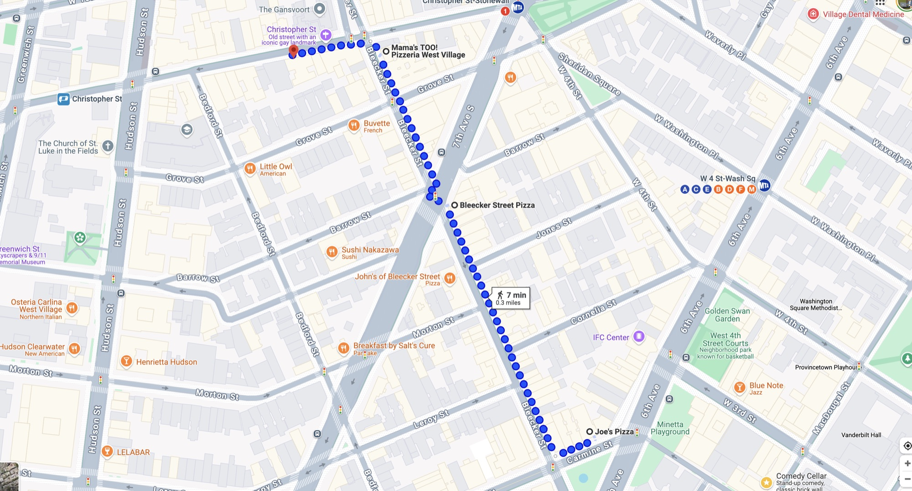

West Village · Manhattan
West Village Pizza Crawl
4 stops + a bonus
All along Bleecker St

The route
-

Classic West Village slices (est. 1915). The Nonna Maria slice is good, and it’s a nice place to hang.
-


Thin crisp crust, minimalist toppings for slices, cash-only. Recently popularized in movies and by “influencers” (est. 1975).
-

Very good square, dense slices with some creative toppings. Newish: a 2nd location after the original opened on the UWS in 2017 (evolved from the original Mama’s on the UWS).
-


Excellent, very thin crust pizza. Newish: a 2nd location after the original opened in Williamsburg in 2017.
Bonus
-
Taylor’s house
She will not be here because she claims she’ll never walk Cornelia St. again.